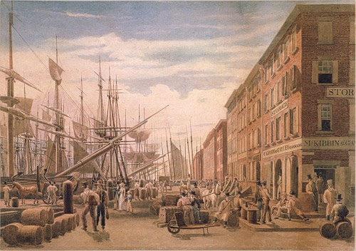
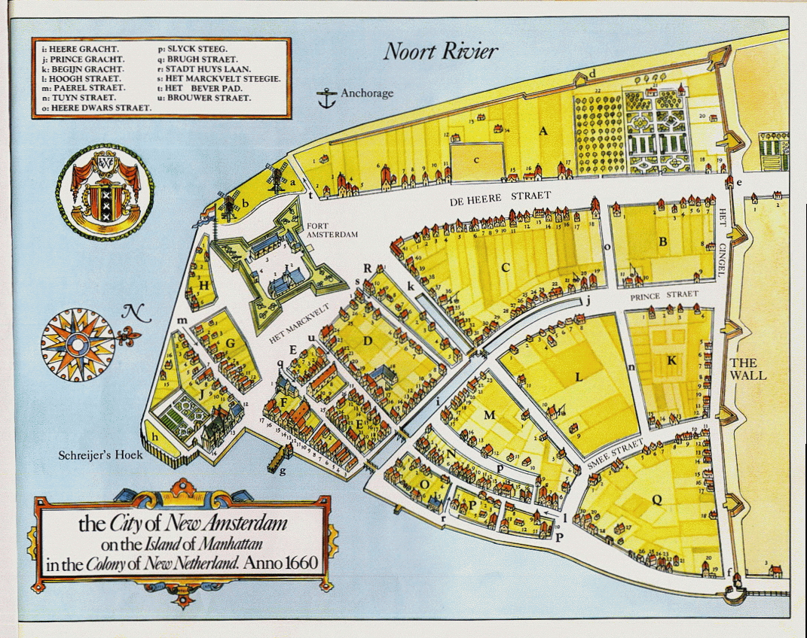

Project Intro
We have learned a lot about some of the European Explorers who explored what is now New York. After the explorers found New York for the Europeans, many Europeans came to settle New York and build a colony. We are going to look at the differences between the way New York looks now, and the way it looked then, and we are going to use Kid Pix to make a map of how New York looked when it was first being colonized.
Teaching Point:
Today we will learn what New York looked like when it was just starting out as a small colony.
New York in the Past

New York was first colonized by the Dutch - Europeans from Holland. They named it New Amsterdam. It wasn't until 1664 that the English took it over and renamed it New York. The reason New Amsterdam grew so quickly is because it was near the water. Being near the water made it easy for trading ships to come and go. Most American cities on the East Coast started the same way.
Here we have a map of New York in the past, and a map of the same place today. What differences can we see?

Click here to see both images in a much bigger size.
Today's Assignment
Use the form below to show the differences between New York today and New York in 1660 when it was called New Amsterdam.
Back to School Portal